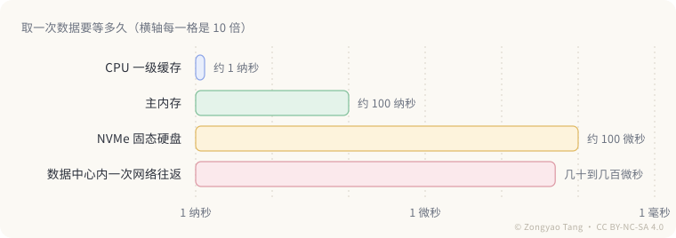
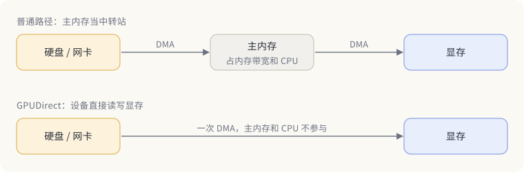
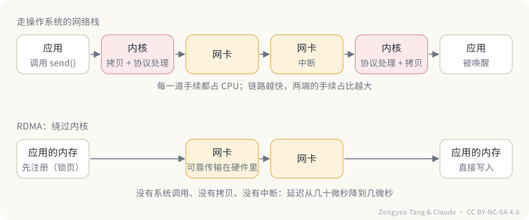

线索是：数据放得越远越慢，差的是数量级 → 内存里的数据并不“固定”在某个位置，要交给设备之前得先钉住 → 设备可以自己搬数据，不用 CPU 逐字节经手 → 而走操作系统的网络栈，每个包都要过很多道手续 → 最后是进程和线程，它解释了数据加载为什么那样设计。
第 0 部分 · 全景与度量0.3 系统基础回顾
这一单元回答后面要用到哪些操作系统和计算机组成的知识？
承接 0.1：管道的每一段都踩在这些基础上。这里只回顾后面用得着的部分，把操作系统和计算机网络课上学过的东西和今天的 GPU 训练接上。
- 存储层次：数据每远一层，就慢一到三个数量级
- 内存里的数据会被操作系统挪动，交给设备之前要先“钉住”
- DMA：让设备自己搬数据，CPU 只负责发令
- 走操作系统的网络栈，每个包都要过很多道手续
- 进程、线程与 GIL：为什么数据加载要开多个进程
讲解
1存储层次：数据每远一层，就慢一到三个数量级
离处理器最近的缓存，访问一次约 1 纳秒；主内存约 100 纳秒；固态硬盘约 100 微秒；经过普通网络取一次数据，也要几十到几百微秒。每一层之间差的不是几倍，而是几十到上千倍。
计算机里的存储是分层的，原因很简单：又快又大的存储造不出来，或者贵得用不起。于是用少量很快的存储放最常用的数据，用大量较慢的存储放其余的。
大致的量级（不同硬件有出入，记住数量级就够了）：
- CPU 一级缓存：约 1 纳秒，几十 KB
- 主内存：约 100 纳秒，几十到几百 GB
- NVMe 固态硬盘：约 100 微秒（10 万纳秒）
- 数据中心内的一次普通网络往返：几十到几百微秒，和固态硬盘在同一个量级

每远一层慢一到三个数量级（量级，不是精确值） 这套层次能工作，靠的是局部性：程序在一小段时间里，往往反复访问同一小片数据（时间局部性），或者访问相邻的数据（空间局部性）。所以把刚用过的和它旁边的数据放进快的那一层，大多数访问就都落在快的地方。
反过来，如果程序的访问方式破坏了局部性，比如在一个大数组里随机跳着读，每次都要去慢的那一层，速度就会差出几十倍，而代码看起来没有任何区别。
GPU 有一套自己的存储层次（寄存器、共享内存、缓存、显存，3.3 会讲），规律完全一样。整门课里凡是带“分块”“缓存”“不落地”字样的技术，都是在同一个问题上做文章：怎样让数据待在近处，并在那里被多用几次。
打个比方把 1 纳秒放大成 1 秒：从缓存取数据是 1 秒，从内存取是 2 分钟，从固态硬盘取是 1 天多，经过普通网络取一次也要一天到几天。
所以“把要用的数据放在近处”是所有性能优化的第一原则。GPU 上的分块、Flash Attention、KV cache，本质都是这一条。
- 知道了数据在哪一层。接下来看数据怎么从内存交给设备（GPU、网卡）。这里有一个容易忽略的前提。
2内存里的数据会被操作系统挪动，交给设备之前要先“钉住”
程序看到的内存地址是虚拟的，操作系统随时可能把背后的物理内存页换个位置，甚至换出到磁盘。设备要直接读写一块内存，这块内存就必须被锁定在物理位置上，这叫锁页内存（pinned 或 page-locked memory）。
先回顾虚拟内存。每个进程以为自己独占一大片连续的内存，实际上操作系统把这片“虚拟地址”切成一页一页（通常每页 4KB），再映射到物理内存的某些页上。这层映射让操作系统有很大的自由：
- 物理内存紧张时，把不常用的页写到磁盘上（换出），腾出空间；
- 为了整理碎片，把一页数据从一个物理位置搬到另一个位置。
程序完全感觉不到，因为它只认虚拟地址。
但设备不一样。GPU 或网卡要直接从内存取数据时（下一节的 DMA），用的是物理地址。如果传输到一半，操作系统把这一页挪走了，设备就会读到错误的内容。所以交给设备之前，必须告诉操作系统：这些页不许换出、不许移动。这就是“锁页”。
落到 PyTorch 上：
- 普通张量在可分页的内存里。执行
.cuda()时，CUDA 驱动要先把数据复制到它自己的一块锁页中转区，再从那里传给 GPU。两次拷贝，而且这个过程会占住 CPU。 - 锁页张量可以直接传，只有一次拷贝；并且可以做成异步的（
non_blocking=True）：CPU 发起传输后立刻去干别的，由硬件在后台完成。
锁页不是免费的。被锁住的内存操作系统不能再灵活调配，锁得太多，整台机器可用的内存就少了，反而可能变慢。所以只锁那些马上要送进 GPU 的数据。
后面讲 RDMA 时你会再次遇到它：网卡要直接读写应用的内存，同样要求这块内存先“注册”，注册做的第一件事就是锁页。
源码导读：DataLoader 的 pin_memory 做了什么
这是一个很适合入门的源码阅读点，代码短，而且每一行都能对上刚才讲的原理。
去哪里看：PyTorch 仓库的
torch/utils/data/_utils/pin_memory.py，以及torch/utils/data/dataloader.py里创建线程的部分。主流程（读的时候抓这条线）：
- DataLoader 的各个 worker 进程把准备好的 batch 放进一个队列。
- 当
pin_memory=True时，主进程里会多起一个线程，运行_pin_memory_loop：它不断从队列里取出 batch，对里面的每个张量调用.pin_memory()，再放进另一个队列。 - 训练循环从第二个队列取到的，就已经是锁页的张量了。
值得想一想的三个问题（答案都在刚才的讲解和 0.3 的最后一节里）：
- 为什么锁页这一步放在主进程的一个线程里做，而不是在 worker 进程里做？（锁页内存属于某个进程；在 worker 里锁了，传回主进程时还得再拷一次。）
- 为什么可以用线程而不用担心 GIL？（
.pin_memory()的主要工作是内存拷贝，在 C++ 里执行，执行时会释放 GIL。） - 如果只设了
pin_memory=True，但.cuda()时没有写non_blocking=True，会怎样？（少了一次拷贝，但传输仍然是同步的，CPU 要等它完成，重叠的好处没有拿到。）
对应的排查经验：如果 profiler 里看到
pin_memory相关的线程很忙、或者取 batch 的等待时间很长，说明锁页这一步本身成了瓶颈，通常是 batch 很大或者内存紧张。写到 2.4（数据供给）时会再回到这段代码，读的时候请对照当时的源码核对细节。打个比方像图书馆的书：平时管理员可以随意调整书的位置，你凭索书号总能找到。但如果要让快递员直接上门取某一本，就得先告诉管理员：这本书在取走之前不许动。
所以往 GPU 拷数据时，从锁页内存出发可以直接传；从普通内存出发，驱动得先把数据复制到一块锁页的中转区，多一次拷贝。这就是 DataLoader 里 pin_memory=True 的由来。
后面会用到 DMA：让设备自己搬数据，CPU 只负责发令进程、线程与 GIL：为什么数据加载要开多个进程GPU 在等数据：先查数据管线pin_memory 加 non_blocking：让“拷上 GPU”和计算重叠出处Best Practices §9.1 主机与设备间的数据传输- 内存钉住之后，设备就可以直接来取了。这个“直接”值得多说一句，因为它是后面好几项技术的原型。
3DMA：让设备自己搬数据，CPU 只负责发令
直接内存访问（DMA）是指设备（GPU、网卡、硬盘控制器）自己读写主内存，不需要 CPU 把数据一个字节一个字节地经手。CPU 只做三件事：告诉设备数据在哪、有多长，然后在设备完成时收到通知。
没有 DMA 的时候，把数据从硬盘读进内存是这样的：CPU 从设备读一个字，写进内存，再读下一个字。数据有多大，CPU 就要忙多久。
有了 DMA，流程变成：
- CPU 告诉设备：“把这 1 GB 数据写到内存的这个地址。”
- 设备自己通过总线把数据写进内存。这期间 CPU 是自由的。
- 写完后，设备发一个中断通知 CPU。
CPU 从“搬运工”变成了“调度员”。这也是上一节锁页的原因：设备拿到的是物理地址，传输期间这块内存不能动。
GPU 和主机之间的数据拷贝就是 DMA。所以从锁页内存出发的拷贝可以异步：CPU 发起之后不用等。
再往前推一步。普通的流程里，数据从硬盘到 GPU 要经过主内存中转：硬盘 →（DMA）→ 主内存 →（DMA）→ 显存。从网络到 GPU 也一样：网卡 → 主内存 → 显存。主内存在这里只是个中转站，而且每次中转都要占用内存带宽和 CPU 的管理开销。

两条路径的差别只在中间那一站 GPUDirect 系列技术去掉了这个中转站：
- GPUDirect Storage：NVMe 硬盘直接把数据写进显存。
- GPUDirect RDMA：网卡直接读写显存。多机训练时，梯度从一张卡的显存出发，经过网卡和网线，直接落进另一台机器上那张卡的显存，两边的主内存和 CPU 都不参与。
第 5 部分讲高速互联时，会从这里接下去。
打个比方像搬家：你不用自己一箱一箱扛，只要告诉搬家公司“从这间屋搬到那间屋”，他们搬完了打电话告诉你。这段时间你可以做别的事。
所以大块数据的传输不占 CPU 的计算时间，可以和别的工作重叠。把这个思路推到极致，就是让两个设备直接对传、完全不经过主内存：GPUDirect Storage（硬盘直达显存）和 GPUDirect RDMA（网卡直达显存）。
- 设备可以直接读写内存。那两台机器之间传数据呢？传统的做法要经过操作系统，代价比想象的大。
4走操作系统的网络栈，每个包都要过很多道手续
用普通的 socket 发一段数据：应用要做一次系统调用进入内核；数据从应用的内存拷贝到内核的缓冲区；内核给它加上 TCP、IP 的包头，处理确认和重传；最后才交给网卡。收的一方再反着走一遍。

同一次发送，两条路径上各有多少道手续 你学计算机网络时接触的是 TCP/IP 协议栈。它在操作系统内核里实现，一次发送要经过这些步骤：
- 系统调用：应用调用
send()，CPU 从用户态切换到内核态。一次切换本身就要几百纳秒到一微秒。 - 拷贝：内核把数据从应用的缓冲区复制到自己的 socket 缓冲区。
- 协议处理：切成一个个包，算校验和，加包头，维护拥塞窗口，处理确认和重传。这些都是 CPU 在做。
- 中断：数据到达接收方时，网卡发中断，内核处理后再拷贝给应用，可能还要唤醒睡眠中的进程。
当网络是 1 Gb/s 的时候，这些开销相对于传输时间可以忽略。但今天的集群网络是 100 到 400 Gb/s：链路上传 1 MB 只要几十微秒，而两端各拷贝一次内存、各做一遍协议处理，加起来比这还长。CPU 成了瓶颈，一个核全速处理协议也喂不满一条链路。
RDMA（远程直接内存访问）把上面四项逐一去掉：
- 绕过内核：应用把要发的数据描述直接交给网卡，不做系统调用。
- 零拷贝：网卡直接从应用的内存里取数据（这块内存要先注册，也就是锁页），直接写进对方应用的内存。
- 协议在网卡里做：可靠传输由网卡的硬件完成，不占 CPU。
- 接收方 CPU 不参与：数据到了直接落进指定的内存，不需要中断去唤醒谁。
结果是延迟从几十微秒降到几微秒，而且几乎不消耗 CPU。把“应用的内存”换成“显存”，就是上一节的 GPUDirect RDMA。
这里只建立一个印象：快的网络，瓶颈不在线上，而在两端。 第 5 部分会展开讲 RDMA 的具体机制、InfiniBand 和 RoCE 的区别，以及出了问题怎么查。
打个比方像寄国际包裹：填单、报关、安检、分拣，每一道都要排队。东西本身只飞了几个小时，手续却花了好几天。
所以当网络本身已经很快时，时间主要花在这些手续上。RDMA 的思路就是让应用直接和网卡对话，绕过内核，数据不再拷贝。高速训练集群用的 InfiniBand 和 RoCE，都是这条路。
- 系统调用：应用调用
- 最后回到管道最前端的数据准备。它为什么设计成“一个主进程加若干 worker 进程”？答案在操作系统和 Python 的一个特点里。
5进程、线程与 GIL：为什么数据加载要开多个进程
线程共享同一块内存，切换便宜；进程各有各的内存，互相隔离。Python 有一把全局解释器锁（GIL）：同一时刻只有一个线程能执行 Python 代码。所以要让多个 CPU 核同时跑 Python 写的数据预处理，只能开多个进程。
先回顾两个概念。进程是操作系统分配资源的单位，每个进程有独立的内存空间；线程是进程内部的执行流，同一进程的线程共享内存。线程之间交换数据很方便（直接读同一块内存），进程之间则需要专门的机制。
在 C++ 里，多线程能充分利用多核。但 Python（标准的 CPython 解释器）有 GIL：为了保护解释器内部的数据结构，它规定同一时刻只有一个线程能执行 Python 字节码。于是用 Python 写的计算，开再多线程也只能用上一个核。
有两种情况不受 GIL 限制：
- 线程在等 IO（读文件、等网络）时会释放 GIL；
- 调用 C/C++ 实现的函数时，如果它内部主动释放了 GIL（PyTorch 的大部分张量运算都这样做）。
数据预处理恰恰常常是纯 Python 代码：解析样本、分词、各种变换。所以 DataLoader 选择了多进程：每个 worker 是一个独立的进程，有自己的解释器和自己的 GIL，可以真正并行。
多进程的代价有三个：
- 传递数据要花力气：worker 准备好的 batch 要交给主进程。PyTorch 用共享内存来传张量，避免了大块数据的序列化，但仍然有开销。
- 占内存：每个进程都有自己的一份解释器和导入的库；如果数据集对象很大，还可能被复制多份。
- 启动慢：每个 epoch 开始时创建进程要花时间（可以用
persistent_workers=True让它们一直活着）。
所以 num_workers 的选择是一个权衡：太少，CPU 没用满，GPU 等数据；太多，进程互相抢 CPU 和内存，反而变慢。通常的做法是从 0 开始逐步加大，画出吞吐曲线，找到不再上升的那个点。
（新版本的 Python 开始提供没有 GIL 的构建，这个局面将来可能会变，但目前主流环境仍然如此。）
打个比方一间厨房只有一把菜刀（GIL）：请再多厨师，同一时刻也只有一个人能切菜。想同时切，只能多开几间厨房（进程），代价是做好的菜要端来端去。
所以 DataLoader 的 num_workers 指的是进程数。进程多了，CPU 用得上了，但进程之间传递数据有成本，也更占内存。worker 数不是越多越好，要实测找拐点。
串起来
存储层次决定了“把数据搬近”永远是第一原则；锁页内存让设备能直接访问数据；DMA 让设备自己搬运；内核网络栈的层层手续正是 RDMA 要绕开的东西；多进程是 Python 里并行准备数据的办法。后面讲 pin_memory、GPUDirect、RDMA、DataLoader 时，都会回到这里。
考考自己
不看讲解，用自己的话讲一遍。
- 从缓存到网络，各层存储的访问延迟大约是什么量级？这对性能优化意味着什么？
- 什么是锁页内存？为什么从锁页内存往 GPU 拷数据更快？
- DMA 解决了什么问题？GPUDirect 和它是什么关系？
- 用传统 socket 收发数据时，时间花在哪些地方？RDMA 是怎么绕开这些开销的？
- 为什么 DataLoader 用多进程而不是多线程？多进程带来了什么代价？
术语
- page-locked memory
- 锁页内存
- DMA
- 直接内存访问
- kernel bypass
- 绕过内核
- GIL
- 全局解释器锁
- locality
- 局部性